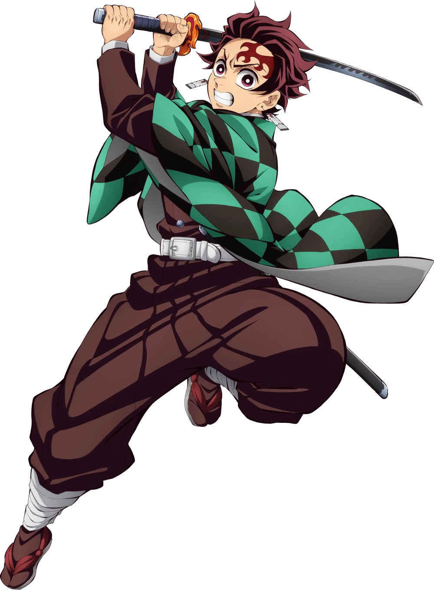

Tanjiro Kamado
Tanjiro Kamado
Edad: 16
Respiracion: Respiración del Agua, Respiración del Sol
Protagonista principal de Demon Slayer: Kimetsu no Yaiba. Se convirtio en cazador de demonios para encontar un remedio para convertir a su hermana (Nezuko Kamado), de nuevo en humana y para cazar y matar demonios.